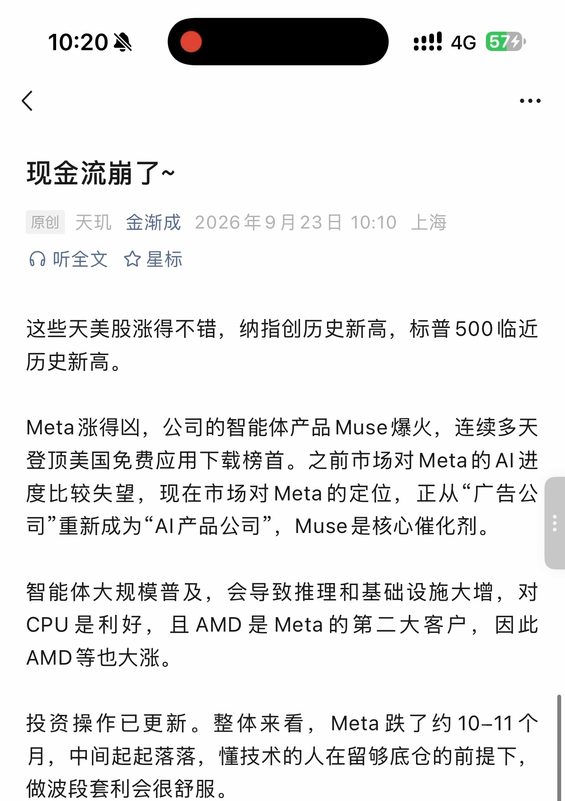
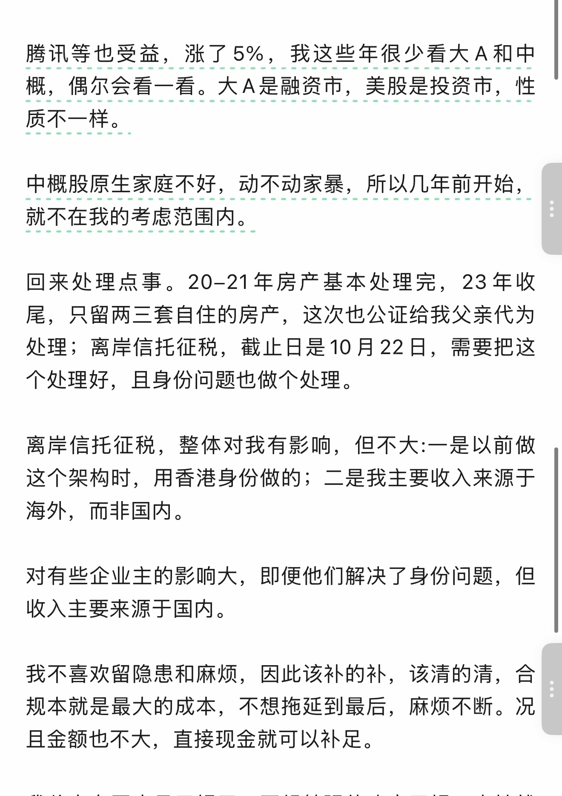
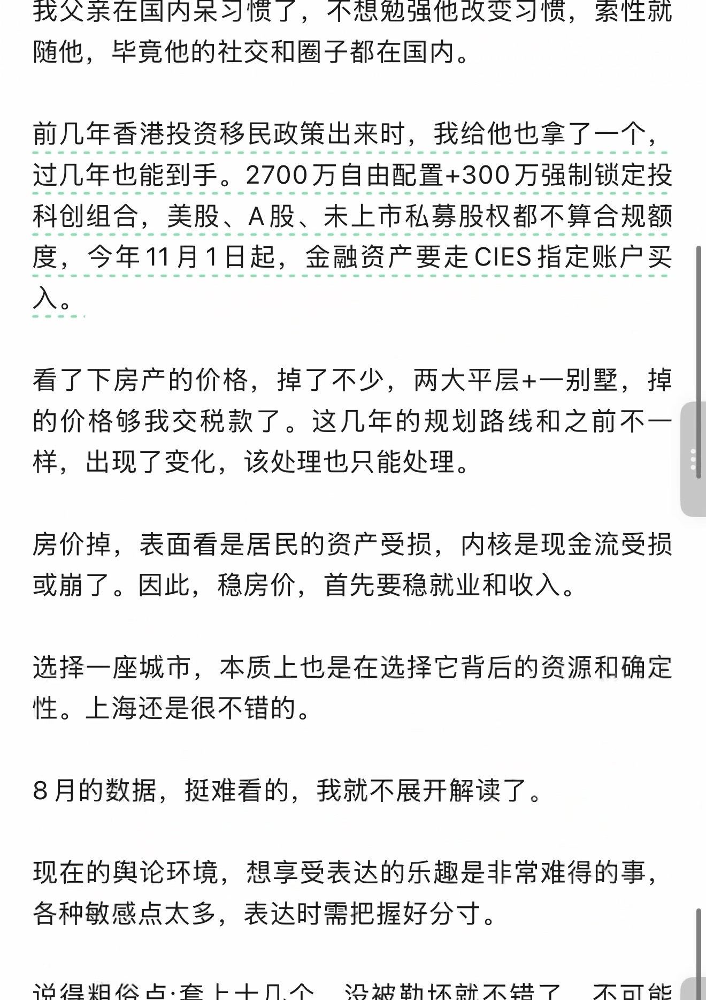
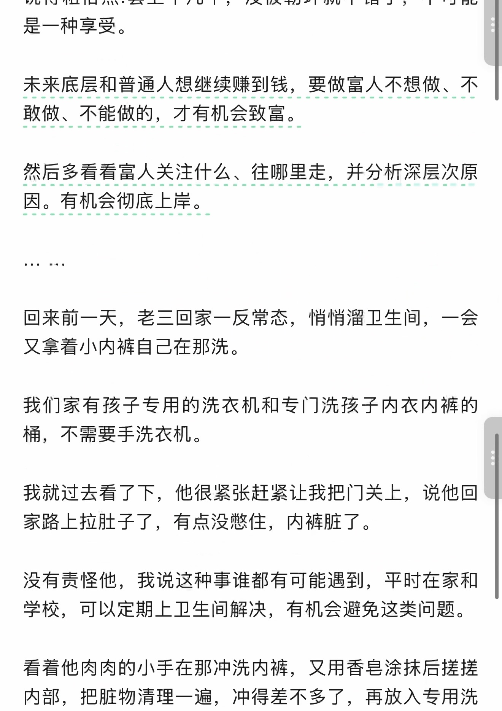
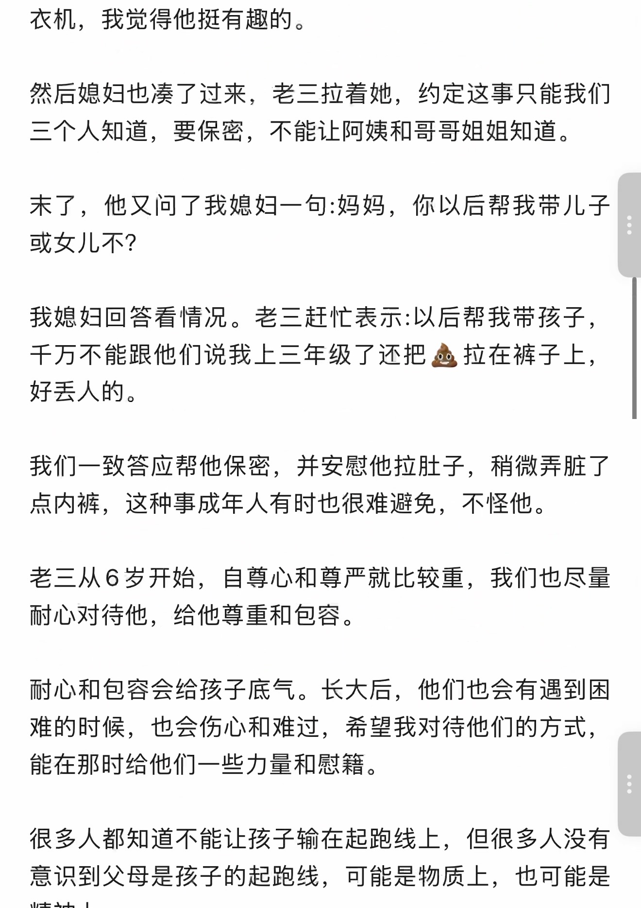
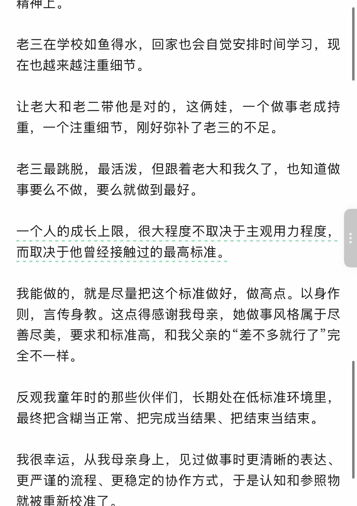
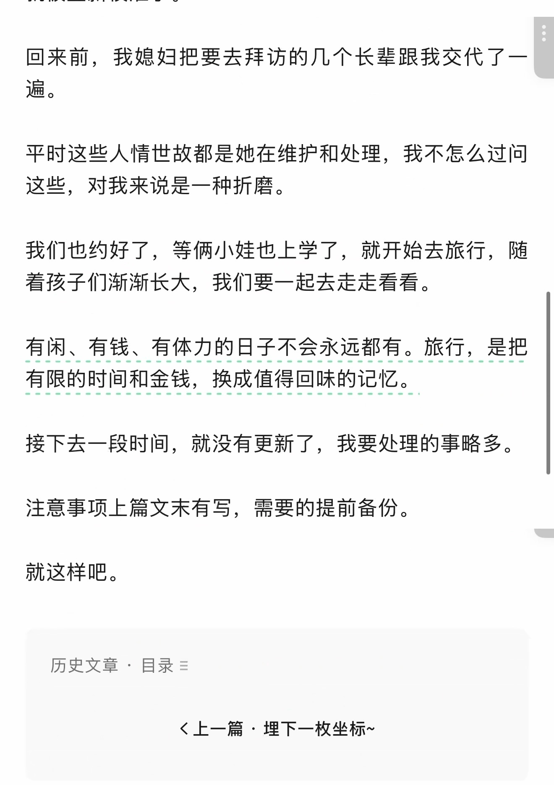
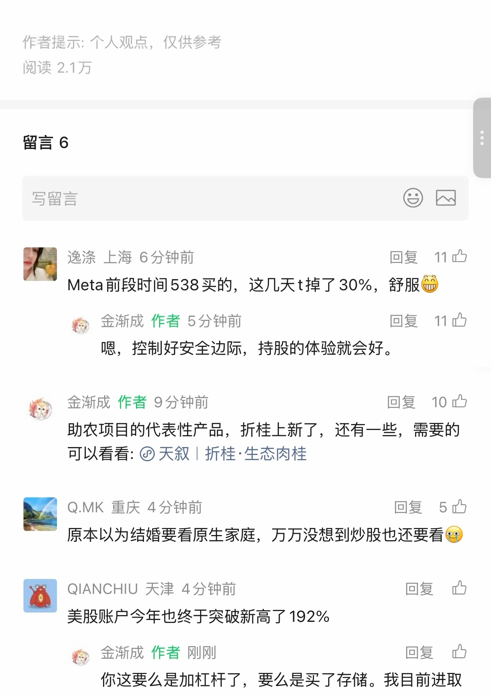
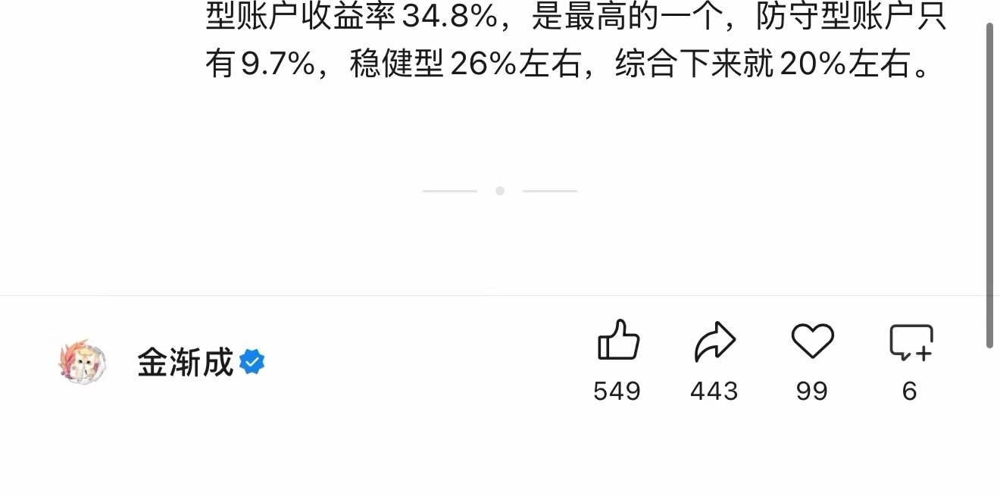

现金流崩了~
原始截图优先 · OCR 仅辅助检索
原始 PDF 不公开，本页展示捕获页面的截图。 下方优先展示原始截图；自动识别文字默认收起，仅辅助检索与对照。OCR 由程序自动识别，尚未逐字核对，可能存在错字、漏字、漏行、顺序或断行错误。留言与作者回复仅限截图中可见的内容，不代表完整线上留言，也未据此推断留言总数。
OCR 识别提示（待核对）
- OCR 自动识别文字，尚未逐字校对；可能错字、漏字、漏行，数字、姓名、标点及断行也可能有误，请以截图为准。
- 这里只保留 PDF 已截到的正文、留言和作者回复；截图以外的留言不在此存档中。
- 未从截图推断留言总数或回复关系；手机界面文字也可能混入 OCR。
- 低置信标记仅为机器提示，并不表示未标记的文字已经准确。
识别工具：tesseract 5.5.0 · tesseract-ocr/tessdata_best chi_sim。识别器置信度仅用于提示核对，不是文字准确率。
第 1 页 · 原始截图

查看本页自动识别文字（OCR待核对） · 23 处低置信度提示
以下为未经逐字核对的自动识别结果，请以上方原图为准。
下和
现金流衣了 ~原创天现金渐成 2026 年 9 月 23 日 10:10 上海人听全文空星标
这些天美股涨得不错， 纳指创历史新高， 标普 500 临近历史新高。
Meta 涨得凶， 公司的智能体产品 Muse 爆火， 连续多天登顶美国免费应用下载榜首。 之前市场对 Meta 的 Al 进度比较失望， 现在市场对 Meta 的定位， 正从 “广告公司重新成为 ”Al 产品公司，Muse 是核心催化剂。
智能体大规模普及， 会导致推理和基础设施大增， 对CPU 是利好， 且 AMD 是 Meta 的第二大客户， 因此AMD 等也大涨。
投资操作已更新。 整体来看，Meta 跌了约 10-11 个月， 中间起起落落， 懂技术的人在留够底仓的前提下，做波段套利会很舒服。
识别器标记 23 处低置信度，请对照截图核对
这些是识别器的风险提示，并不等于已确认的错误。
- 下和
- 现金流衣了 ~
- 原创天现金渐成 2026 年 9 月 23 日 10:10 上海
- 人听全文空星标
- 这些天美股涨得不错， 纳指创历史新高， 标普 500 临近
- Meta 涨得凶， 公司的智能体产品 Muse 爆火， 连续多天
- 登顶美国免费应用下载榜首。 之前市场对 Meta 的 Al 进
- 度比较失望， 现在市场对 Meta 的定位， 正从 “广告公
- 司重新成为 ”Al 产品公司，Muse 是核心催化剂。
- AMD 等也大涨。
- 月， 中间起起落落， 懂技术的人在留够底仓的前提下，
第 2 页 · 原始截图

查看本页自动识别文字（OCR待核对） · 12 处低置信度提示
以下为未经逐字核对的自动识别结果，请以上方原图为准。
腾讯等也受蔓， 涨了 5%， 我这些年很少看大 A 和中概， 偶尔会看一看。 大 A 是融资市， 美股是投资市， 性
回来处理点事。20-21 年房产基本处理完，23 年收尾， 只留两三套自住的房产， 这次也公证给我父亲代为处理 ; 离岸信托征税， 截止日是 10 月 22 日， 需要把这个处理好， 且身份问题也做个处理。
离岸信托征税， 整体对我有影响， 但不大 :一是以前做这个架构时， 用香港身份做的 ; 二是我主要收入来源于海外， 而非国内。
对有些企业主的影响大， 即便他们解决了身份问题， 但收入主要来源于国内。
我不喜欢留隐患和麻烦， 因此该补的补， 该清的清， 合规本就是最大的成本， 不想拖延到最后， 麻烦不断。 况且金额也不大， 直接现金就可以补足。
识别器标记 12 处低置信度，请对照截图核对
这些是识别器的风险提示，并不等于已确认的错误。
- 腾讯等也受蔓， 涨了 5%， 我这些年很少看大 A 和中
- 概， 偶尔会看一看。 大 A 是融资市， 美股是投资市， 性
- 回来处理点事。20-21 年房产基本处理完，23 年收
- 处理 ; 离岸信托征税， 截止日是 10 月 22 日， 需要把这
- 这个架构时， 用香港身份做的 ; 二是我主要收入来源于
- 我不喜欢留隐患和麻烦， 因此该补的补， 该清的清， 合
- 规本就是最大的成本， 不想拖延到最后， 麻烦不断。 况
第 3 页 · 原始截图

查看本页自动识别文字（OCR待核对） · 10 处低置信度提示
以下为未经逐字核对的自动识别结果，请以上方原图为准。
我父亲在国内呆习惯了， 不想勉强他改变习惯， 索性就随他， 上毕竟他的社交和圈子都在国内。
前几年香港投资移民政策出来时， 我给他也拿了一个，过几年也能到手。2700 万自由配置 +300 万强制锁定投科创组合， 美股、A 股、 未上市私募股权都不算合规额度， 今年 11 月 1 日起， 金融资产要走 CIES 指定账户买
看了下房产的价格， 掉了不少， 两大平层 + 一别墅， 掉的价格够我交税款了。 这几年的规划路线和之前不一样， 出现了变化， 该处理也只能处理。
房价掉， 表面看是居民的资产受损， 内核是现金流受损或月了。 因此， 稳房价， 首先要稳就业和收入。
选择一座城市， 本质上也是在选择它背后的资源和确定性。 上海还是很不错的。
8 月的数据， 插难看的， 我就不展开解读了。
现在的与论环境， 想享受表达的乐趣是非常难得的事，各种敏感点太多， 表达时需把握好分寸。
说得粗俗点 : 套上十几个， 没被勒坏就不错了， 不可能
识别器标记 10 处低置信度，请对照截图核对
这些是识别器的风险提示，并不等于已确认的错误。
- 我父亲在国内呆习惯了， 不想勉强他改变习惯， 索性就
- 随他， 上毕竟他的社交和圈子都在国内。
- 看了下房产的价格， 掉了不少， 两大平层 + 一别墅， 掉
- 或月了。 因此， 稳房价， 首先要稳就业和收入。
- 8 月的数据， 插难看的， 我就不展开解读了。
- 现在的与论环境， 想享受表达的乐趣是非常难得的事，
第 4 页 · 原始截图

查看本页自动识别文字（OCR待核对） · 17 处低置信度提示
以下为未经逐字核对的自动识别结果，请以上方原图为准。
是一种享受。
未来底层和普通人想继续赚到钱， 要做富人不想做、 不
ee
回来前一天， 老三回家一反常态， 悄悄渔了卫生间， 一会又拿着小内裤自己在那洗。
我们家有孩子专用的洗衣机和专门洗孩子内衣内裤的桶， 不需要手洗衣机。
我就过去看了下， 他很紧张赶紧让我把门关上， 说他回家路上拉肚子了， 有点没阁住， 内裤脏了。
没有责怪他， 我说这种事谁都有可能遇到， 平时在家和学校， 可以定期上卫生间解决， 有机会避免这类问题。
看着他肉肉的小手在那冲洗内裤， 又用香生涂抹后搓搓内部， 把脏物清理一遍， 冲得差不多了， 再放入专用洗
识别器标记 17 处低置信度，请对照截图核对
这些是识别器的风险提示，并不等于已确认的错误。
- 未来底层和普通人想继续赚到钱， 要做富人不想做、 不
- ee
- 回来前一天， 老三回家一反常态， 悄悄渔了卫生间， 一会
- 我们家有孩子专用的洗衣机和专门洗孩子内衣内裤的
- 桶， 不需要手洗衣机。
- 家路上拉肚子了， 有点没阁住， 内裤脏了。
- 没有责怪他， 我说这种事谁都有可能遇到， 平时在家和
- 看着他肉肉的小手在那冲洗内裤， 又用香生涂抹后搓搓
- 内部， 把脏物清理一遍， 冲得差不多了， 再放入专用洗
第 5 页 · 原始截图

查看本页自动识别文字（OCR待核对） · 29 处低置信度提示
以下为未经逐字核对的自动识别结果，请以上方原图为准。
衣机， 我觉得他挺有趣的。
然后媳妇也站了过来， 老三拉着她， 约定这事只能我们三个人知道， 要保密， 不能让阿姨和哥哥姐姐知道。
末了， 他又问了我媳妇一句 :妈妈， 你以后帮我带儿子或女儿不 ?
我媳妇回答看情况。 老三赶忙表示 :以后帮有我带孩子，干万不能跟他们说我上三年级了还把盘拉在裤子上，好丢人的。
我们一致答应帮他保密， 并安奈他拉肚子， 稍微弄脏了点内裤， 这种事成年人有时也很难避免， 不怪他。
老三从 6 岁开始， 自尊心和尊严就比较重， 我们也尽量耐心对待他， 给他尊重和包容。
耐心和包容会给孩子底气。 长大后， 他们也会有遇到困难的时候， 也会伤心和难过， 希望我对待他们的方式，能在那时给他们一些力量和奈籍。 上
很多人都知道不能让孩子输在起跑线上， 但很多人没有意识到父母是孩子的起跑线， 可能是物质上， 也可能是
识别器标记 29 处低置信度，请对照截图核对
这些是识别器的风险提示，并不等于已确认的错误。
- 衣机， 我觉得他挺有趣的。
- 然后媳妇也站了过来， 老三拉着她， 约定这事只能我们
- 我媳妇回答看情况。 老三赶忙表示 :以后帮有我带孩子，
- 干万不能跟他们说我上三年级了还把盘拉在裤子上，
- 好丢人的。
- 我们一致答应帮他保密， 并安奈他拉肚子， 稍微弄脏了
- 点内裤， 这种事成年人有时也很难避免， 不怪他。
- 老三从 6 岁开始， 自尊心和尊严就比较重， 我们也尽量
- 耐心和包容会给孩子底气。 长大后， 他们也会有遇到困
- 难的时候， 也会伤心和难过， 希望我对待他们的方式，
- 能在那时给他们一些力量和奈籍。 上
- 意识到父母是孩子的起跑线， 可能是物质上， 也可能是
第 6 页 · 原始截图

查看本页自动识别文字（OCR待核对） · 13 处低置信度提示
以下为未经逐字核对的自动识别结果，请以上方原图为准。
精神上。
老三在学校如鱼得水， 回家也会自觉安排时间学习， 现在也越来越注重细节。
让老大和老二带他是对的， 这俩娃， 一个做事老成持重， 一个注重细节， 刚好弥补了老三的不足。
老三最跳脱， 最活泼， 但跟着老大和我入了， 也知道做事要么不做， 要么就做到最好。
一个人的成长上限， 很大程度不取决于主观用力程度， 上
我能做的， 就是尽量把这个标准做好， 做高点。 以身作则， 言传身教。 这点得感谢我母亲， 她做事风格属于尽善尽美， 要求和标准高， 和我父亲的 “差不多就行了完全不一样。
反观我童年时的那些伙伴们， 长期处在低标准环境里，最终把含糊当正常、 把完成当结果、 把结束当结束。
我很幸运， 从我母亲身上， 见过做事时更清晰的表达、更严谨的流程、 更稳定的协作方式， 于是认知和参照物就被重新校准了。
识别器标记 13 处低置信度，请对照截图核对
这些是识别器的风险提示，并不等于已确认的错误。
- 在也越来越注重细节。
- 让老大和老二带他是对的， 这俩娃， 一个做事老成持
- 老三最跳脱， 最活泼， 但跟着老大和我入了， 也知道做
- 一个人的成长上限， 很大程度不取决于主观用力程度， 上
- 善尽美， 要求和标准高， 和我父亲的 “差不多就行了完
- 我很幸运， 从我母亲身上， 见过做事时更清晰的表达、
- 更严谨的流程、 更稳定的协作方式， 于是认知和参照物
第 7 页 · 原始截图

查看本页自动识别文字（OCR待核对） · 24 处低置信度提示
以下为未经逐字核对的自动识别结果，请以上方原图为准。
回来前， 器好扫把要去到访的几个长中甩交人了一遍。
平时这些人情世故都是她在维护和处理， 我不怎么过问这些， 对我来说是一种折磨。
我们也约好了， 等俩小娃也上学了， 就开始去旅行， 随着孩子们渐渐长大， 我们要一起去走走看看。
有闲、 有钱、 有体刀的日子不会永远部有。 旅行， 是把
接下去一段时间， 就没有更新了， 我要处理的事略多。注意事项上篇文末有写， 需要的提前备份。
就这样吧。
历史文章， 目录 =
《上一篇埋下一枚坐标 ~
识别器标记 24 处低置信度，请对照截图核对
这些是识别器的风险提示，并不等于已确认的错误。
- 回来前， 器好扫把要去到访的几个长中甩交人了一
- 遍。
- 平时这些人情世故都是她在维护和处理， 我不怎么过问
- 有闲、 有钱、 有体刀的日子不会永远部有。 旅行， 是把
- 注意事项上篇文末有写， 需要的提前备份。
- 历史文章， 目录 =
- 《上一篇埋下一枚坐标 ~
第 8 页 · 原始截图

查看本页自动识别文字（OCR待核对） · 34 处低置信度提示
以下为未经逐字核对的自动识别结果，请以上方原图为准。
作者提示 : 个人观点， 仅供参考
阅读 2.1 万
留言 6
写留言四四逸党上海 6 分钟前回复之Meta 前段时间 538 买的， 这几天 t 掉了 30%， 舒服全枚人金渐成作者 5 分钟前回复 11 四
咽， 控制好安全边际， 持股的体验就会好。
金渐成作者 9 分钟前回复记忆
助农项目的代表性产品， 折桂上新了， 还有一些， 需要的可以看看 : @ 天叙 | 折桂 :生态肉桂
Q.MK 重庆 4 分钟前回复已原本以为结婚要看原生家庭， 万万没想到炒股也还要看惫
加 QIANCHIU 天津 4 分钟前回复 ”让美股账户今年也终于突破新高了 192%6稚人金渐成作者刚刚回复 ”办
你这要么是加杠杆了， 要么是买了存储。 我目前进取
识别器标记 34 处低置信度，请对照截图核对
这些是识别器的风险提示，并不等于已确认的错误。
- 作者提示 : 个人观点， 仅供参考
- 写留言四四
- 逸党上海 6 分钟前回复之
- Meta 前段时间 538 买的， 这几天 t 掉了 30%， 舒服全
- 枚人金渐成作者 5 分钟前回复 11 四
- 咽， 控制好安全边际， 持股的体验就会好。
- 金渐成作者 9 分钟前回复记忆
- 可以看看 : @ 天叙 | 折桂 :生态肉桂
- Q.MK 重庆 4 分钟前回复已
- 原本以为结婚要看原生家庭， 万万没想到炒股也还要看惫
- 加 QIANCHIU 天津 4 分钟前回复 ”让
- 美股账户今年也终于突破新高了 192%6
- 稚人金渐成作者刚刚回复 ”办
第 9 页 · 原始截图

查看本页自动识别文字（OCR待核对） · 7 处低置信度提示
以下为未经逐字核对的自动识别结果，请以上方原图为准。
型账户收益率 34.8%， 是最高的一个， 防守型账户只有 9.7%， 稳健型 26% 左右， 综合下来就 20% 左右。
瞧。 金渐成必 3 Cr
识别器标记 7 处低置信度，请对照截图核对
这些是识别器的风险提示，并不等于已确认的错误。
- 型账户收益率 34.8%， 是最高的一个， 防守型账户只
- 瞧。 金渐成必 3 Cr
按日期浏览全部来源（同日按条目标识排序）
回到页首 ↑